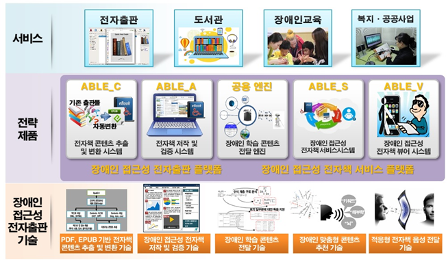

장애를 가진 이들을 위한 발명
Inventions for people with disability
코로나 발병으로 인해 외부활동이 제약되면서 많은 학생들이 실내에서 개인으로 진행할 수 있는 봉사활동을 하고 있다.
그중 하나가 전자책 제작이다. 전자책 제작봉사활동은 시각장애인들을 위한 봉사활동으로 최근 관련 봉사활동의 관심이 증가하여 봉사활동을 할 수 있는 책을 찾기 어려울 정도다. 이에 이런분들에게 특허로 기술의 발전과 봉사(재능기부)등의 일석이조의 역할을한 가슴 따뜻해지는 특허들을 소개하려한다.

2018년 4월 한국전자통신연구원(ETRI)에의해 장애인 접근성 전자책 뷰어 기술이라는 이름으로 개발된 전자책 읽기 기술이다. 이를 통해 전자책 제작의 난제로 알려진 표, 그래프 그림등을 내용(언어)으로 전달 할 수 있게되었다. 이전까지는 DAISY 라는 시각장애인용 전용 도서에서 책을 빌렸지만 연간 신간의 10%까지만 제작이 가능하였고 시각장애인을 위한 도서 사용이 불가능한 도서관또한 존재했다. 이러한 사유에서 탄생한 본 기술은 4개의 핵심기술(변환도구, 저작도구, 리더, 서비스플랫폼)로 구성되어 있다.
변환도구(Converter)는기존 제작된 도서를 시각장애인이 이해할 수 있는 표준 전자책으로 변환하는 기술이다. 저작도구는 전자책 제작자가 이용자의 접근성에 맞게 전자책을 만드는 것이다.리더(Reader)는 2차적으로 비장애인들또한 해당뷰를 이용할 수 있게하고 TTS(문자음성 자동변환기술:Text To Speech)를 이용하여 연속읽기 끊어읽기등을 제공해준다. 더불어 빨리읽기(비장애인보다 듣기속도가 1.6배 빠르기때문), 메모기능 또한 제공해준다. 마지막 핵심기술은 서비스 플랫폼으로 전자책을 검색하여 다운로드할 수 있는 전자책 제공 서버 개념이다. 전체적으로 본 기술은 국제 표준기술 EPUB (Electronic PUBlication)을 기반으로 만들어졌다. 앱을 깔아 이용해 볼 수 있으며 ios와 android등 운영체제의 걸림 없이 사용할 수 있다. 연구원들은 도서관, 유통업체 및 관공서 등에 배포하여 전자책 서비스 운영과 전자책 유통서비스, 온라인 전단지등에 활용 가능하다 밝혔다.
.png) 애플(APPLE)이 지난 2월 출원해 2020년 5월 26일 등록을 마친 특허(Guidance device for the sensory impaired : US10664058)다 . 장애인을 위한 스마트 기기로 스마트 손잡이, 스마트 의류 등 웨어러블 기기에 대해 다루고 있다. 기본적으로 스마트기기의 센서를 이용해 주변 환경의 정보를 수집하여 사전에 위험한 부분들을 촉각과 같은 떨림을 통해 소유자에게 전달하는 기술이다.
다음의 오른쪽 그림에서 남성은 손목의 스마트워치와 스마트폰을 통해 알람을 받고 있다. 지팡이를 사용하지 않고 기기만을 이용해 걷는 것이다. 지나가는 트럭과 휴대폰을 보며 걷는 남자, 그리고 신호등. 이곳을 지나는 유저에게는 진동, 소리와 같은 안내 결과가 사용자의 환경에 기반하여 뜰 것이다.
왼쪽 그림의 실린더 형태의 손잡이는 길 안내를 도와주는 스마트 기기이다. 411번 손잡이 부분에 자주 사용하는 손을 맞춰 설정한 뒤 이후 손바닥 지점에 따른 촉각 신호로 거리를 알려주는 역할을 한다. 번호 413번과 414번은 이미지센서로 신호등의 불빛색상과 레이저등을 확인하는 등의 역할을 한다. 또 다른 기술로는 스마트 의류로 왼쪽 위의 그림을 살펴보면 913번 소매 아래 부분의 동그라미는 카메라의 위치다. 이 카메라는 사용자의 눈이 되고 등 부분에는 터치 기기가 삽입되어 쉽게 길을 찾을 수 있다. 등을 통해 감각이 전달되기 때문에 등의 감각에 집중해야 할 필요가 있다.
WHO(World Health Organization)에 따르면 2012년 4월 시각장애를 가진 사람이 전 세계 2억 8500만 명으로 저시력자는 2억 4600만 명, 눈이 먼 사람은 3900만 명으로 추정했다. 시각장애인 뿐만 아니라 청각장애인들또한 이용가능한 기술이기 때문에 상용화를 시작한다면 시각•청각 장애인들의 생활에 큰 도움이 될 것으로 보인다.(2:Background)
앞서 말한 봉사활동을 통해 장애를 가진 분들에대해 내가 할 수 있는 것은 무엇일까라는 생각을 하게 되었고, 그 과정에서 찾은 특허들을 소개해봤다.
많은 이들이 쉽게 지나칠 수 있는 부분이지만 장애인분들을 위한 복지 발전과 같은 부분에도 관심을 가져 관련 발명들 또한 많이 출원되길 바라는 바다.
애플(APPLE)이 지난 2월 출원해 2020년 5월 26일 등록을 마친 특허(Guidance device for the sensory impaired : US10664058)다 . 장애인을 위한 스마트 기기로 스마트 손잡이, 스마트 의류 등 웨어러블 기기에 대해 다루고 있다. 기본적으로 스마트기기의 센서를 이용해 주변 환경의 정보를 수집하여 사전에 위험한 부분들을 촉각과 같은 떨림을 통해 소유자에게 전달하는 기술이다.
다음의 오른쪽 그림에서 남성은 손목의 스마트워치와 스마트폰을 통해 알람을 받고 있다. 지팡이를 사용하지 않고 기기만을 이용해 걷는 것이다. 지나가는 트럭과 휴대폰을 보며 걷는 남자, 그리고 신호등. 이곳을 지나는 유저에게는 진동, 소리와 같은 안내 결과가 사용자의 환경에 기반하여 뜰 것이다.
왼쪽 그림의 실린더 형태의 손잡이는 길 안내를 도와주는 스마트 기기이다. 411번 손잡이 부분에 자주 사용하는 손을 맞춰 설정한 뒤 이후 손바닥 지점에 따른 촉각 신호로 거리를 알려주는 역할을 한다. 번호 413번과 414번은 이미지센서로 신호등의 불빛색상과 레이저등을 확인하는 등의 역할을 한다. 또 다른 기술로는 스마트 의류로 왼쪽 위의 그림을 살펴보면 913번 소매 아래 부분의 동그라미는 카메라의 위치다. 이 카메라는 사용자의 눈이 되고 등 부분에는 터치 기기가 삽입되어 쉽게 길을 찾을 수 있다. 등을 통해 감각이 전달되기 때문에 등의 감각에 집중해야 할 필요가 있다.
WHO(World Health Organization)에 따르면 2012년 4월 시각장애를 가진 사람이 전 세계 2억 8500만 명으로 저시력자는 2억 4600만 명, 눈이 먼 사람은 3900만 명으로 추정했다. 시각장애인 뿐만 아니라 청각장애인들또한 이용가능한 기술이기 때문에 상용화를 시작한다면 시각•청각 장애인들의 생활에 큰 도움이 될 것으로 보인다.(2:Background)
앞서 말한 봉사활동을 통해 장애를 가진 분들에대해 내가 할 수 있는 것은 무엇일까라는 생각을 하게 되었고, 그 과정에서 찾은 특허들을 소개해봤다.
많은 이들이 쉽게 지나칠 수 있는 부분이지만 장애인분들을 위한 복지 발전과 같은 부분에도 관심을 가져 관련 발명들 또한 많이 출원되길 바라는 바다.